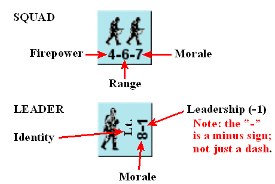
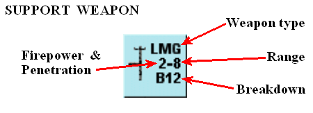
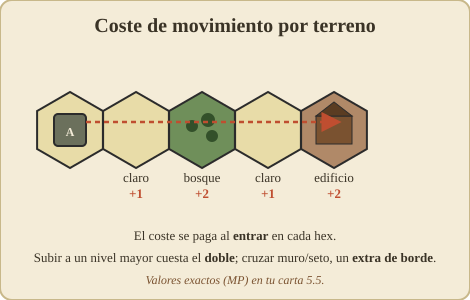
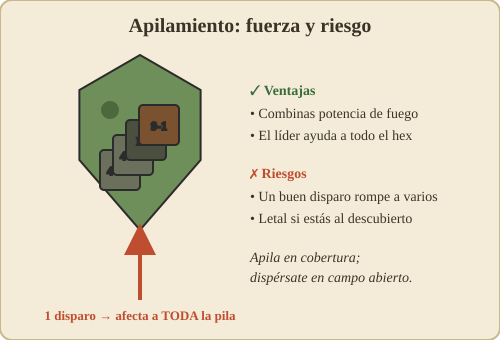
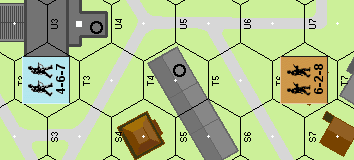

Conceptos básicos (reglas 1–7)¶

1. INTRODUCCIÓN¶
SQUAD LEADER es un juego muy detallado y, por tanto, complejo. De hecho, SQUAD LEADER es más un sistema de juego que un juego. Una vez dominado este sistema, el jugador será capaz de simular (o "jugar") cualquier acción de escala comparable de la Segunda Guerra Mundial en Europa. Para ayudar al jugador a superar estas reglas necesariamente extensas, hemos recurrido a la Instrucción Programada (P.I.), que requiere que el jugador lea solo una parte limitada de las reglas para poder jugar un escenario preseleccionado. De este modo, el jugador puede llegar a dominar las reglas de forma progresiva, como por bloques, a medida que juega. Es importante que los jugadores se tomen en serio el enfoque de la Instrucción Programada, leyendo las reglas gradualmente conforme avanzan de un escenario preparado al siguiente. A pesar de todos los esfuerzos por mantener la jugabilidad, hay mucho que sigue confiándose a la memoria del jugador. "Abarcar más de lo que se puede" es una forma garantizada de acabar en la frustración total.
Se recomienda que los jugadores se familiaricen con los componentes del juego mientras leen las secciones 2 a 21 por primera vez. Ignora por ahora las referencias numéricas entre paréntesis. Después, vuelve a leer las secciones 2 a 21, consultando las referencias numéricas cuando sea necesario y estudiando los diagramas explicativos proporcionados. Consulta las numerosas tablas de la cara de infantería (blanca) de la Tarjeta de Datos de Referencia Rápida (Quick Reference Data Card) y luego procede a jugar el Escenario 1 para coger el feeling del juego. Cuando estés satisfecho con tu dominio de la mecánica de juego, pasa al Escenario 2 según el reglamento. Lo importante que hay que recordar es que los escenarios proporcionados no constituyen el juego que acabas de comprar. Son tus herramientas para dominar el sistema de juego de SQUAD LEADER. Úsalas con sabiduría.
2. FICHAS DE UNIDAD (UNIT COUNTERS)¶

2.1 Las piezas de cartón troquelado (en adelante denominadas fichas de unidad) representan escuadras de infantería, sus oficiales y suboficiales (en adelante denominados colectivamente Líderes) y diversas armas de apoyo utilizadas durante el juego. Los números de la unidad representan las capacidades y características de esa unidad. El siguiente diagrama ilustra la simbología que aparece en el anverso de las fichas básicas de infantería y de armas de apoyo de SQUAD LEADER. La simbología del reverso de estas fichas se explicará más adelante.
2.2 La POTENCIA DE FUEGO (PF) es la fuerza básica con la que una ficha puede atacar en combate.
2.3 El ALCANCE es el número de hexágonos de distancia desde el hex de la unidad que dispara hasta donde la ficha puede llegar con sus factores normales de Potencia de Fuego. El alcance hasta un objetivo se calcula como el menor número de hexes desde la unidad que dispara hasta el hex objetivo, ambos inclusive, independientemente del número real de hexes cruzados por la Línea de Visión (en adelante denominada LDV — véase 7).
2.4 La MORAL es una valoración relativa de la capacidad de una unidad para soportar el castigo antes de "desmoralizarse" y correr a cubierto. Es el punto en el que su voluntad de sobrevivir vence a la disciplina militar.
2.5 La IDENTIDAD es el nombre y el rango de la ficha de Líder, solo a efectos de identificación.
2.6 El LIDERAZGO es la valoración relativa de la competencia táctica de un Líder y de su capacidad para sacar lo mejor de sus hombres. Este modificador, normalmente negativo, se añade como modificador a las tiradas de dados de Moral o de Potencia de Fuego de cualquier escuadra influida por el Líder.
2.7 El TIPO DE ARMA muestra el tipo de arma de apoyo en uso. Las fichas de arma de apoyo deben ser servidas por una ficha de escuadra para ser operativas, aunque en algunos casos un Líder puede servir un arma de apoyo en solitario con el mismo efecto o uno reducido. El término "MG" se usará en adelante para indicar una forma de ametralladora (Machine Gun) como arma de apoyo. Las MG enemigas pueden capturarse y ser usadas por cualquiera de los dos bandos.
2.8 La PENETRACIÓN es una capacidad exclusiva de las ametralladoras que permite que su fuego sea plenamente efectivo contra todas las unidades de un número de hexes objetivo, a diferencia de la potencia de fuego normal de una escuadra, que solo afecta a un hex objetivo. Los hexes penetrados deben estar en línea recta a lo largo de la Línea de Visión. Por tanto, una MMG con un factor de penetración de 4 podría disparar a través de cuatro hexes con igual efecto en cada uno. Los hexes penetrados no tienen por qué ser adyacentes ni estar en la misma "hilera de hexes" (véase 17.5-6). No obstante, un factor de penetración no permite que una MG dispare a través de un edificio o de un elemento de terreno boscoso hacia otro hex. El factor de penetración de una MG se pierde siempre al disparar desde un nivel de elevación a un nivel de elevación diferente.
2.9 El número de AVERÍA (BREAKDOWN) determina si un arma sufre un fallo temporal al disparar (18.1).

ESCUADRA (SQUAD) - Potencia de Fuego (Firepower) — primer número (4) - Alcance (Range) — tercer número (7) - Moral (Morale) — segundo número (6)
(Ejemplo de ficha: 4-6-7 = Potencia de Fuego 4, Alcance 6, Moral 7)
LÍDER (LEADER) - Identidad (Identity) — silueta/rango del líder - Liderazgo (Leadership) (-1) — modificador de mando - Moral (Morale) — valor inferior (8)
Nota: el «-» es un signo menos; no es un simple guion.

ARMA DE APOYO (SUPPORT WEAPON) - Tipo de arma (Weapon type) — LMG - Alcance (Range) — segundo número (8) - Potencia de Fuego y Penetración (Firepower & Penetration) — primer número (2) - Avería (Breakdown) — B12
(Ejemplo de ficha: LMG, 2-8, B12)
3. EL TABLERO (THE MAPBOARD)¶
3.1 El JUEGO BÁSICO I utiliza un solo tablero, el tablero de ciudad nº 1. La descripción de los tipos de terreno se encuentra en la Tabla de Efectos del Terreno (en adelante denominada TEC, Terrain Effects Chart), situada en la contraportada de este reglamento.
3.2 Superpuesta sobre el tablero hay una retícula hexagonal que se usa para determinar el movimiento y el alcance.
3.3 Dentro de cada hexágono (hex) hay un punto blanco (o cuadrado) que marca el centro absoluto de ese hex. Como todo disparo se realiza de centro de hex a centro de hex, estos puntos se convierten en los puntos de referencia para determinar la Línea de Visión (7).
3.4 Ten en cuenta que, aunque el Juego Básico I utiliza un solo tablero, todas las secciones de tablero son isomorfas y pueden unirse entre sí de cualquier manera para formar áreas de juego más grandes.
3.5 COORDENADAS DE CUADRÍCULA: Cada hex tiene su propia coordenada de cuadrícula identificativa impresa en el centro superior del hex. La coordenada de cuadrícula completa se compone del número de tablero, la letra de la hilera de hexes y el número del hex dentro de esa hilera. Por ejemplo, el hex 2BB5 contiene el símbolo de colina "∆538". Cuando se unen dos tableros, los medios hexes de cada borde de tablero se combinan para formar un hex completo. Si solo uno de estos medios hexes contiene una coordenada de cuadrícula, el hex combinado se considera parte del tablero que contiene la coordenada. Si ninguno o ambos hexes contienen una coordenada de cuadrícula impresa, el hex deriva su número de tablero y letra de hilera del tablero situado más al noreste en la configuración del tablero. El número de posición de la hilera sería 0 o 10 según la coordenada del hex adyacente en la hilera identificativa.
3.6 Las ilustraciones de aceras o senderos (ejemplo: hex 1BB5) y la diferencia de color entre las carreteras pavimentadas de la ciudad (1C4) y los caminos de tierra (1B5) del campo no tienen ningún papel en el juego y se incluyen solo por motivos estéticos.
3.7 Los medios hexes de los bordes del tablero son jugables y tienen el mismo efecto que los hexes completos.
3.8 Los Efectos del Terreno y los Costes de Movimiento de los hexes que contienen más de un elemento de terreno son acumulativos. Por tanto, a la infantería le cuesta 4 FM entrar en el hex 2I9, y el fuego contra ese hex objetivo se modificará con un +3 a la tirada de dados.
Costes de movimiento por terreno¶
| Terreno | Coste |
|---|---|
| *Terreno abierto, Cráter de obús, Trigal | 1 FM |
| *Al entrar en Carretera desde un lado de hex sin carretera | 1 FM |
| *Al entrar en Carretera desde un lado de hex con carretera | 1/2 FM |
| *Bosque | 2 FM |
| *Entrar en cualquier Edificio | 2 FM |
| Mover dentro de un Edificio | 2 FM |
| Sobre Muros o Setos | 1 FM +CDT |
CDT = Coste del Terreno en el que se entra.
Verifica los valores con tus cartas/tablas originales.
4. SECUENCIA DE JUEGO (SEQUENCE OF PLAY)¶

A efectos de definición, nos referiremos al jugador que mueve primero en el turno como el atacante; y al jugador que mueve en segundo lugar como el defensor. Cada turno de juego consta de dos turnos de jugador completos de 8 fases cada uno, representando 2 minutos de tiempo real.
4.1 FASE DE REORGANIZACIÓN (RALLY PHASE): Ambos jugadores pueden intentar reparar armas de apoyo averiadas y reorganizar unidades desmoralizadas.
4.2 FASE DE FUEGO PREPARADO (PREP FIRE PHASE): El jugador atacante puede ahora disparar con cualquiera de sus unidades contra unidades enemigas dentro de la LDV de la unidad atacante. Coloca un marcador de Fuego Preparado sobre las unidades que disparen.
4.3 FASE DE MOVIMIENTO (MOVEMENT PHASE): El jugador atacante puede ahora mover aquellas unidades no desmoralizadas que no dispararon durante la Fase de Fuego Preparado.
4.4 FASE DE FUEGO DEFENSIVO (DEFENSIVE FIRE PHASE): El jugador defensor puede ahora disparar con cualquiera de sus unidades contra unidades enemigas que se encuentren actualmente dentro de su LDV, o que se movieran a través de su LDV durante la Fase de Movimiento precedente.
4.5 FASE DE FUEGO DE AVANCE (ADVANCING FIRE PHASE): El jugador atacante puede ahora disparar con cualquiera de sus unidades que se movieron durante la Fase de Movimiento, a 1/2 de potencia de fuego. También puede disparar a plena potencia de fuego con aquellas unidades que ni hicieron Fuego Preparado ni se movieron. Las unidades que hicieron Fuego Preparado no pueden disparar en la Fase de Fuego de Avance. Retira todos los marcadores de Fuego Preparado.
4.6 FASE DE HUIDA (ROUT PHASE): Las unidades desmoralizadas de ambos bandos deben buscar cubierto en bosques o edificios, huyendo primero las unidades del jugador en turno. Las que ya estén en dicho cubierto no necesitan moverse, salvo que estén adyacentes a una unidad enemiga.
►4.7 FASE DE AVANCE (ADVANCE PHASE): El jugador atacante puede ahora mover una, varias o todas sus unidades de infantería no desmoralizadas un hex (independientemente de su estado previo de fuego o movimiento). El hex al que se avanza puede estar ocupado por unidades enemigas. Este es el único momento en que se puede mover una unidad de infantería a un hex ocupado por una unidad enemiga. (EXCEPCIONES: 27, 53.4, 56, 57).
4.8 FASE DE COMBATE CUERPO A CUERPO (CLOSE COMBAT PHASE): Las unidades de ambos bandos que ocupen el mismo hex deben atacar a las unidades enemigas allí presentes usando la Tabla de Combate Cuerpo a Cuerpo.
4.9 Con esto termina el turno del jugador atacante. El jugador defensor pasa ahora a ser el jugador atacante, invierte la ficha de Turno y repite los pasos 4.1-4.8. Llegado ese punto, se ha completado un turno de juego completo; la ficha de turno se vuelve a invertir y se avanza una casilla en la Tabla de Registro de Turnos del Escenario.
5. MOVIMIENTO (MOVEMENT)¶

Cada hex representa una distancia de 40 metros. La escala del terreno está abstraída para captar la "sensación" correcta de los muchos obstáculos de terreno distintos en el desarrollo de una batalla táctica.
5.1 Durante la parte de la Fase de Movimiento de tu turno puedes mover todas, algunas o ninguna de tus unidades que no dispararon durante la Fase de Fuego Preparado.
5.2 Las unidades se mueven en cualquier dirección o combinación de direcciones hasta el límite de sus Factores de Movimiento (en adelante denominados FM). El dado no tiene nada que ver con el movimiento. Básicamente, cada unidad puede moverse un número de hexes igual a su factor de movimiento, aunque este puede verse aumentado, disminuido o restringido por Líderes (5.44), el terreno (5.5), la presencia de unidades enemigas (5.6), los objetos transportados (5.7) o el fuego de unidades enemigas (16.1).
5.3 Las unidades pueden moverse sobre y apilarse encima de otras unidades amigas. Los factores de movimiento no pueden transferirse de una unidad a otra, ni acumularse de un turno a otro.
5.4 Solo los vehículos tienen asignaciones de FM separadas impresas en su ficha. Todas las demás fichas tienen una capacidad de movimiento uniforme según su tipo de unidad:
5.41 Toda ficha de escuadra tiene 4 FM.
5.42 Toda ficha de Líder tiene 6 FM.
5.43 Ninguna ficha de apoyo tiene FM propio. Deben ser "transportadas" por fichas de escuadra, Líder o vehículo para moverse.
5.44 Si una o varias escuadras pasan toda la Fase de Movimiento apiladas con un Líder, recibirían una bonificación de 2 FM.
5.5 Cada vez que una unidad entra en un hex gasta un número de sus FM para ese turno, en función del terreno dentro de ese hex. El coste en FM para entrar en un hex se muestra en (actualizar cuando sea definitivo) y también se resume en la Tarjeta de Datos de Referencia Rápida.
5.51 Los muros y setos están impresos directamente sobre los propios lados de hex. Al cruzar uno de estos lados de hex, una unidad paga una penalización de un FM más el coste normal del terreno del hex al que entra.
5.52 El coste en FM para entrar en un hex de carretera es de solo 1/2 FM si se entra al hex a través de un lado de hex cruzado por la carretera.
5.53 El coste en FM de la infantería al entrar en hexes de Terreno Abierto (colinas), carretera, edificios y bosques se duplica al moverse a un hex de terreno más elevado que el ocupado previamente. No hay penalización adicional por moverse a lo largo del mismo nivel de hexes de terreno elevado. No hay coste adicional ni reducido por moverse de terreno más alto a terreno más bajo. No obstante, ten en cuenta que no hay diferenciación de elevación del terreno (salvo los edificios de dos plantas) en el tablero nº 1, que es el único tablero usado en el Juego Básico I.
5.54 Los efectos del terreno son acumulativos para las unidades que se mueven hacia o a través de hexes que contienen más de un tipo de terreno. (EXCEPCIÓN: infantería que se mueve a un cráter de obús situado a lo largo de una carretera). Excepción: El hex 3I10 cuesta 2 FM al entrar desde los hexes H9, I9 y/o J9. Costaría 4 FM entrar desde H10, J10 o desde fuera del tablero, porque las unidades en movimiento estarían moviéndose a una elevación más alta. La carretera que llega al hex no anula el coste de movimiento del resto del terreno del hex (véase también el hex 3I1), aunque permitiría a las unidades que abandonan el hex hacerlo al ritmo de movimiento de carretera.
5.6 Las unidades de infantería pueden moverse hacia y alrededor de las unidades enemigas sin restricciones (EXCEPCIÓN: 16.1), pero solo pueden entrar en un hex ocupado por una unidad enemiga durante la Fase de Avance (EXCEPCIONES: 27.2, 56.8, 57.1).
►5.7 ARMA DE APOYO: Las fichas de escuadra y de Líder pueden transportar armas de apoyo a distintos costes para sus propios factores de movimiento. Estos costes de porte por arma se muestran en la Tabla de Armas de Apoyo (Support Weapons Chart). El coste de porte por transportar un arma de apoyo es el mismo independientemente de la distancia recorrida. Una unidad de infantería puede recoger (o soltar) armas de apoyo en cualquier punto de su movimiento, siempre que disponga de FM suficiente para ello. Observa que el coste de porte de una misma arma puede ser diferente según la transporte una ficha de escuadra o de Líder. Una escuadra puede transportar hasta 3 puntos de porte sin coste alguno para su propio Factor de Movimiento. Un Líder puede transportar 1 punto de porte de armas de apoyo sin coste para su propio Factor de Movimiento. Una unidad pierde un FM por cada punto de porte transportado por encima de estas capacidades de porte normales.
Ejemplo: Una escuadra que transporta dos LMG y un lanzallamas (4 puntos de porte) solo puede gastar 3 Factores de Movimiento durante la Fase de Movimiento. Si va acompañada de un oficial (que a su vez transporta dos puntos de porte de armas), esa misma escuadra podría gastar 5 FM durante la Fase de Movimiento.
►5.71 Un Líder nunca puede transportar Armas de Apoyo que excedan los 3 puntos de porte de Líder.
►5.72 La capacidad de porte de una unidad no puede combinarse con la de otras unidades. EXCEPCIÓN: Un arma solo puede ser transportada por una unidad a la vez, y el coste de porte de esa arma debe ser pagado por esa unidad. Por tanto, dos escuadras no pueden mover una HMG más de un hex de distancia que cubre una sola escuadra. No obstante, un Líder que pase toda su Fase de Movimiento con una escuadra puede aun así otorgar una bonificación de movimiento a la escuadra, incluso si el propio Líder está transportando 3 puntos de porte de armas de apoyo.
5.73 [GIA 142.22] Independientemente de la penalización de movimiento debida al terreno y/o al porte de armas, una escuadra/dotación siempre puede transportar hasta 5 puntos de porte un hex durante la Fase de Avance. Un Líder siempre puede transportar hasta 3 puntos de porte de Líder un hex durante la Fase de Avance.
►5.74 Cualquier escuadra que transporte 4 o más puntos de porte, o un Líder que transporte 2 o más puntos de porte de Líder durante una Fase de Movimiento, no puede disparar un arma de apoyo en la subsiguiente Fase de Fuego de Avance.
5.75 Ninguna unidad de infantería puede disparar más de un tipo de arma de apoyo en la misma fase de fuego. LMG, MMG y HMG se consideran todas un mismo tipo de arma de apoyo.
5.76 Salvo que se especifique lo contrario, cuando estas reglas se refieran a costes de porte, siempre se referirán a los costes de uso por escuadra.
6. APILAMIENTO (STACKING)¶

►6.1 Cada jugador no puede apilar más de 4 de sus unidades de infantería (de las cuales solo 3 pueden ser escuadras) más un máximo de 10 puntos de porte de armas de apoyo por hex. (EXCEPCIONES: 27.2, 56.8, 57.1).
6.2 En situaciones de Combate Cuerpo a Cuerpo, ambos bandos pueden ocupar el mismo hex hasta su límite máximo normal de apilamiento. Una vez finalizado el Combate Cuerpo a Cuerpo con un bando victorioso, cualquier ficha de arma de apoyo sobrante debe eliminarse, dándole al jugador victorioso la opción de elegir qué armas retirar.
►6.3 Los jugadores pueden exceder los límites de apilamiento durante el movimiento, siempre que los hexes no queden sobreapilados al final de la Fase de Movimiento.
7. LÍNEA DE VISIÓN BÁSICA (LDV)¶


El concepto de visión, o "quién puede ver (y disparar a) qué", se trata a continuación solo en lo que se aplica al tablero nº 1 del Juego Básico I. Otras reglas más avanzadas se presentarán en la Sección 43.
►7.1 Se asume que toda visión sigue una línea recta medida desde el centro del hex que dispara hasta el centro del hex objetivo. Cualquier goma elástica o un trozo de cuerda tensada servirá para comprobar la LDV, aunque una regla recta transparente funciona mejor. Si el obstáculo puede observarse a ambos lados de la cuerda, la LDV está bloqueada. Si surge algún desacuerdo sobre si una LDV está obstruida, debe resolverse con una tirada amistosa de dado.
►7.2 La LDV en el Juego Básico I se considera no obstruida salvo que pase directamente a través de un símbolo de bosque o edificio (no necesariamente un hex de bosque o edificio). Tales símbolos presentes en el hex que dispara o en el objetivo no obstruyen la LDV. La presencia de unidades de infantería en un hex no bloquea necesariamente la LDV a través de ese hex. El fuego puede trazarse a través de unidades de infantería sin afectarlas si el que dispara así lo prefiere (EXCEPCIÓN: 17.6).
7.3 La LDV se extiende hasta los símbolos de bosque o edificio, pero no a través de ellos hacia hexes más allá del hex que contiene el primer símbolo de bosque o edificio encontrado (EXCEPCIÓN: Diferencias de Elevación, 7.4).
7.4 Los edificios que cubren 3 hexes o más se consideran estructuras de varias plantas, y las unidades en dichos edificios pueden trazar LDV por encima de edificios de 2 hexes o menos y de bosques. El hex situado directamente detrás de un edificio o bosque en LDV directa desde el hex que dispara se considera un Hex Ciego y no puede ser objeto de disparo.
Ejemplo: Una unidad en T2 podría disparar por encima del edificio de T4 contra un objetivo en T6 gracias a su ventaja de altura. También podría disparar a T3 y T4, pero no a T5, que es un hex ciego causado por el obstáculo de T4.
7.5 Los edificios de varias plantas obstruyen toda LDV en el Juego Básico I, independientemente de la elevación.
7.6 Las unidades a nivel de suelo pueden ver por encima de obstáculos intermedios hacia edificios de varias plantas. Ten en cuenta que esto es lo contrario de 7.4. El fuego de unidades a nivel de suelo contra objetivos en edificios de varias plantas no podría proceder de un "hex ciego" como el descrito en 7.4.
7.7 Las unidades en el mismo edificio no pueden verse ni dispararse entre sí salvo que sean adyacentes o que la LDV no intersecte ningún símbolo de edificio en los hexes intermedios.
Ejemplo: La LDV desde 1N3 hasta 1N5 está obstruida; la LDV desde 1N3 hasta 1M5 no lo está.
7.8 Las unidades siempre pueden disparar a cualquier hex adyacente, independientemente del terreno (EXCEPCIÓN: 56.3, 57.4).
7.9 [RE: véase SQL 57.] Las unidades en un edificio de varias plantas se consideran simultáneamente en el nivel superior y en el inferior. Al disparar a o desde dicho hex, cualquiera de los dos jugadores puede elegir si quiere que los ocupantes del edificio se consideren en las plantas superiores o inferiores a efectos de resolver su ataque. No obstante, si una MG elige disparar desde el nivel superior contra un objetivo en un nivel diferente, pierde cualquier factor de penetración al que tendría derecho si disparara a lo largo del mismo nivel; una unidad que dispara desde el nivel del suelo sería incapaz de "ver por encima" de obstáculos intermedios.
Tabla de armas de apoyo (5.7)¶
Costes de porte (capacidad de porte: Escuadra/Dotación = 3 puntos; Líder = 1 punto) · Capacidad de operación
| Arma de apoyo | Porte: Escuadra/Dotación | Porte: Líder | Uso si capturada | Manejo por Escuadra | Manejo por Líder |
|---|---|---|---|---|---|
| LMG | 1 | 2 | — | F (17.1) | 1 MG a ½ de potencia de fuego |
| MMG | 4 | A | Sí | — | E |
| HMG | 5 | A | — | — | (17.3) |
| Lanzallamas | 2 | 2 | C, D, H | 1 D (22.3-5) | 1 C (22.4) |
| Carga de demolición | 1 | 1 | C, D, H | 1 D (23.3-4) | 1 C |
| Panzerfaust | ½ | 1 | C, D, H | 4 (37.3) | 1 (37.33) |
| Bazooka | 1 | 2 | No | 2 (37.4) | 1 E (37.43) |
| Radio | 1 | 2 | No | NA | 1 (46.1) |
| Cañón antitanque | B (48.4) | NA | Sí-G | 1 (48.7) | NA |
| Obús de 105 mm | *5 | No | |||
| Mortero (63.6) | D, H |
Notas: - A — Dos líderes pueden transportar una MMG/HMG 1 hex por Fase de Movimiento. - B — Cualquier escuadra puede empujarlo 1 hex durante la Fase de Movimiento. - C — Debe tener un modificador de liderazgo de −2 o −3. - D — Debe ser Ingeniero de Asalto (Assault Engineer). - E — Dos líderes cualesquiera pueden disparar a plena potencia. - F — Una MG o 4 factores de potencia de fuego sin coste; o dos MG cualesquiera que excedan los 4 factores de potencia. - G — Debe ser una unidad de Dotación (Crew). - H — Debe ser una unidad estadounidense. - * — Solo a efectos de apilamiento.
Verifica los valores con tus cartas/tablas originales.

5.7 Cuadro de armas de apoyo¶
| Armas de apoyo | Costes de porte — Escuadra/Dotación (3) | Costes de porte — Líder (1) | Uso capturada | Capacidad de operación — Escuadra | Capacidad de operación — Líder |
|---|---|---|---|---|---|
| LMG | 1 | 2 | F (17.1) | 1 MG a 1/2 de potencia de fuego | |
| MMG | 4 | A | Sí | E | |
| HMG | 5 | A | (17.3) | ||
| Lanzallamas | 2 | 2 | C, D, H | 1 D (22.3-5) | 1 C (22.4) |
| Carga de demolición | 1 | 1 | C, D, H | 1 D (23.3-4) | 1 C |
| Panzerfaust | ½ | 1 | C, D, H | 4 (37.3) | 1 (37.33) |
| Bazooka | 1 | 2 | No | 2 (37.4) | 1 E (37.43) |
| Radio | 1 | 2 | No | NA | 1 (46.1) |
| Cañón antitanque | B (48.4) | NA | Sí-G | 1 (48.7) | NA |
| Obús 105mm | *5 | No | |||
| Mortero (63.6) | D, H |
Notas: - A- Dos líderes pueden transportar un MMG/HMG 1 hex por Fase de Movimiento - B- Cualquier escuadra puede empujarlo 1 hex durante la Fase de Movimiento - C- Debe tener un modificador de liderazgo de -2 o -3 - D- Debe ser Ingeniero de Asalto - E- Dos líderes cualesquiera pueden disparar a plena potencia - F- Un MG o 4 factores de potencia de fuego sin coste; o dos MG cualesquiera que excedan de 4 de potencia de fuego - G- Debe ser una unidad de Dotación (Crew) - H- Debe ser unidad estadounidense - *- Solo a efectos de apilamiento
Verifica los valores con tus cartas/tablas originales.